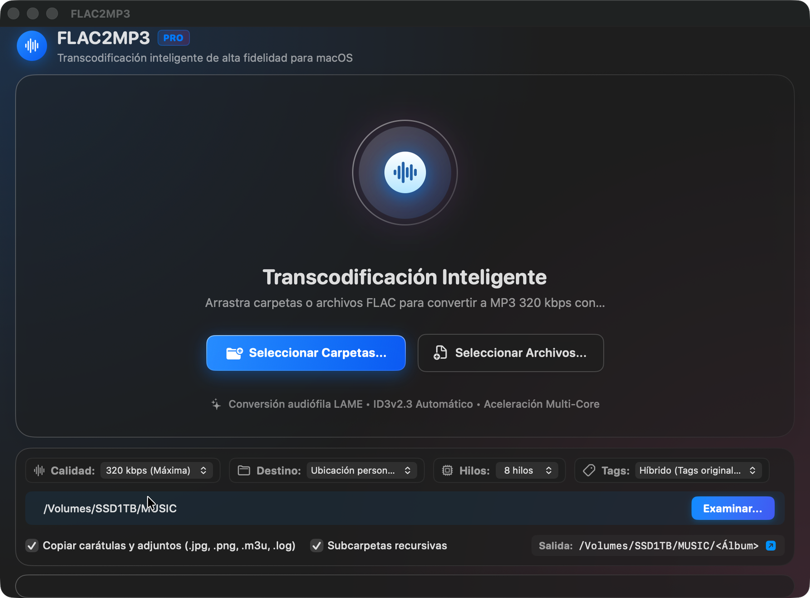

CANAL: r/audiophile● RX
Convertí mi librería FLAC de 400 GB a MP3 320 para el auto. Los tags y carátulas llegaron perfectos, hasta los .cue quedaron ordenados.
Transcodificación inteligente FLAC → MP3 con carátulas ID3v2.3 y tags automáticos. Arrastra carpetas completas, acelera con 2/4/8 hilos, organiza archivos adicionales (.cue, .log, .m3u) y recibe notificaciones al terminar. SwiftUI nativo, modo Glass y aceleración Metal.

Codificación LAME V0/CBR con calidad audiófila, preservando rango dinámico y ganancia de pista.
Extrae e incrusta artwork (cover.jpg, folder.jpg, front.png) y metadatos completos automáticamente.
2, 4 u 8 hilos paralelos para transcodificar batches de carpetas grandes en una fracción del tiempo.
Copia adjuntos (.cue, .log, .m3u, .jpg) junto al MP3 convertido para mantener tu librería intacta.
Vista de tareas con estado, tamaño, tiempo restante y cancelación instantánea de cualquier lote.
Ventana semitransparente con vibrancy, Dark Mode y aviso nativo al completar con resumen de éxitos/fallos.
Convertí mi librería FLAC de 400 GB a MP3 320 para el auto. Los tags y carátulas llegaron perfectos, hasta los .cue quedaron ordenados.
La cola con 8 hilos me pasó un batch de 200 tracks en minutos. La barra de progreso en vivo y el aviso nativo al final son un lujo.
Preservar el artwork y la metadata ID3 al convertir no es trivial; que venga resuelto de fábrica marca la diferencia con los scripts caseros.
Descarga la última versión desde GitHub Releases. Compilado con Swift 6 para macOS 13+ en Apple Silicon. Código abierto, sin suscripciones.